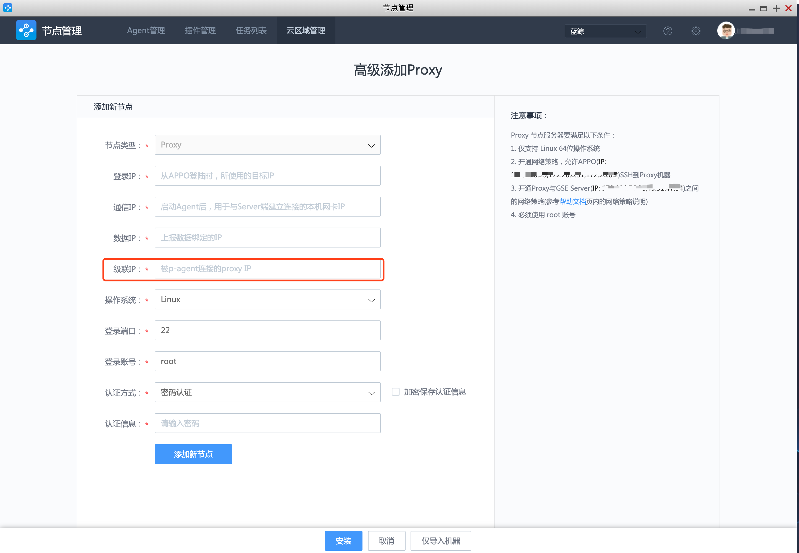

添加 Proxy
创建云区域成功后，会进入到该云区域管理页面，新创建的云区域下，没有任何节点，因此，会看到如下的空列表

到这个页面，管理云区域的第一个步骤已完成，接下来只要完成第二个步骤，创建一台可用的 Proxy 即可。
Note
若此时进入到 Agent 管理页面，将能这个新建的云区域标签, (若标签过多，可以在云区域管理下的列表中进行隐藏)
快速添加 Proxy
通常Proxy，会有内网 IP 和外网 IP：
外网IP 用于与GSE Server建立连接和通信。
内网 IP 可用用于与受控的这个云区域内的其他 Agent节点(我们称为P-Agent)通信。
在简单网络情况，可用选择快速安装。
Note
外网，内网只是一个简单的区域网络的概念，在某些企业中，可能都是多个内网 IP, 没有外网 IP 的情况。
这里指的外网，通常是说与 GSE Server 的内网 IP不在同一局域网，但是可以与 GSE Server 连接的 IP。
点击右上角的 + 添加 Proxy 按钮，进入快速 Proxy 添加页面，如图所示
GSE Proxy节点共有至少 4 个服务(gse_agent, gse_transit, gse_opts, gse_btsvr) , 这些服务都需要与 GSE Server 通信，为了保证服务可用，需要开通这些[网络策略](../附录/network_policy.md)
点击【安装】后，进入安装状态，界面信息与安装直连区域的 Agent 一致，不再详述
Note: Proxy节点的4 个基础服务
- gse_transit： 扮演
gse_data角色，如转发数据等。- gse_agent： 扮演
gse_task角色，如任务下发等。- gse_opts： 扮演
gse_ops角色，如告警汇总及转发等。- gse_btsvr： 扮演
gse_btsvr角色，文件分发。除以上内容外，在安装过程中，还会：
- 在
Proxy节点上安装Python，及用于远程管理Windows的python包impacket。Linux、Window、AIX的 Agent 安装包下载到Proxy机器上的/tmp/byproxy目录下。
高级添加 Proxy
高级添加 Proxy 用于 Proxy 位于一个特殊的网络下时，比如有主机处于多张独立的网络中或者NAT 网络中。可以使用这种模式
在快速添加 Proxy 的页面右侧可以找到高级添加按钮，进入到高级添加 Proxy 页面，如下：

与高级添加 Agent 页面类型，多了一个级联 IP。
级联 IP 通常是内网 IP，被云区域内的其他受控主机连接。
同样需要开通这些 网络策略